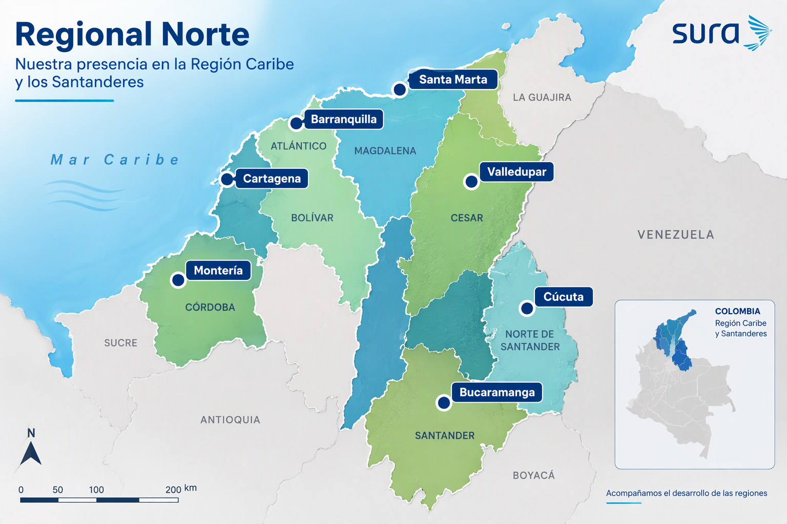

Selecciona la ciudad y el año para recorrer las mejoras ejecutadas.
Multimedia
Interacción de la cadena de valor
Cómo Gestión Administrativa conecta capacidades y aporta valor a las unidades de negocio.
Regional Norte
Gracias
Cuidamos los espacios donde SURA cuida a las personas.
Mapa · Regional Norte

Selecciona una ciudad para consultar sus sedes y las nuevas secciones de planeación.
Ciudad
Proyección de la ciudadContenido pendiente por definir.
Gestión del RiesgoContenido pendiente por definir.
Cifras 2026 · Regional Norte
–Presupuesto proyectos
–Proyectos en ejecución
–Pagado en obras
–Pendiente de pago
Presupuesto por ciudad
Presupuesto por compañía
Presupuesto por analista
Pagos 2026
Detalle de proyectos
IQS
Proyecto
Ciudad
Compañía
Analista
Presupuesto
Pagado
Pendiente
Fuente: excel/Pagos Norte 2026.xlsx (LISTA PROYECTOS y OBRAS Y ADECUACIONES), leído automáticamente. Pagado y pendiente corresponden a pedidos registrados por proyecto. La ciudad se asignó según la descripción del proyecto.
–Presupuesto aprobado
–Ejecutado
–% de ejecución
–Avisos SAP gestionados
Ejecutado vs. presupuesto por ciudad
Estado de las actividades
Ejecución por sede
Sede
Ciudad
Compañía
Presupuesto
Ejecutado
%
Seguimiento
Actividades (avisos SAP)
Aviso
Actividad
Sede
Ciudad
Costo
Estado
Avance
Proveedor
Fuente: excel/Consolidado Cierre 2025 y Presupuesto 2026 (PTTO IMPACTO y AVISOS IMPACTO), leído automáticamente. Presupuesto después de cruces entre compañías.
Visión estratégica 2027-2031
En 2031, la Regional Norte será referente en gestión inmobiliaria para el sector asegurador y de salud: con sedes seguras, accesibles, sostenibles y eficientes, decisiones basadas en datos y una operación que aporta valor a cada negocio de SURA.
Imagen opcional img/vision/vision-1.jpg
Propósito del equipo
Garantizar espacios físicos que habiliten la prestación de servicios de salud y seguros con calidad, continuidad y bienestar para usuarios y empleados.
Cómo lo lograremos
Planeación del portafolio inmobiliario, mantenimiento basado en criticidad, proyectos con control de alcance y costo, y automatización de la información.
La visión se orienta por los principios permanentes del Grupo Empresarial SURA.
Equidad
Priorizar inversiones según necesidad real de cada sede y ciudad, con condiciones justas para usuarios, empleados y proveedores.
Respeto
Espacios accesibles e incluyentes, diseñados escuchando a usuarios, equipos asistenciales y comunidades vecinas.
Responsabilidad
Anticipar riesgos de infraestructura, cumplir normas de habilitación y sismorresistencia, y cuidar los activos confiados.
Transparencia
Contratación trazable, cifras abiertas y rendición de cuentas sobre presupuesto, ejecución y resultados.
Portafolio
Optimización inmobiliaria
Consolidar sedes, evaluar compra vs. arriendo, liberar activos subutilizados y planear crecimiento por ciudad.
Sostenibilidad
Sedes ecoeficientes
Energía solar, renovación HVAC e iluminación LED, uso eficiente de agua y estándares de construcción sostenible.
Riesgo
Infraestructura segura
Cumplimiento NSR-10, contingencias eléctricas, accesibilidad y continuidad de sedes asistenciales críticas.
Activos
Gestión del ciclo de vida
Inventario técnico, vida útil remanente y planes de impacto a 10 años por sede.
Experiencia
Espacios centrados en las personas
Salas de espera, lactancia, rehabilitación y puestos de trabajo que mejoren la experiencia de usuarios y empleados.
Datos
Decisiones con información
Tableros de proyectos, mantenimiento y costos por sede para priorizar con evidencia.
Imagen opcional img/vision/vision-2.jpg
Imagen opcional img/vision/vision-3.jpg
2027Diagnóstico del portafolio y plan maestro por ciudad.
2028Consolidación de sedes y primeras soluciones de energía renovable.
2029Mantenimiento predictivo en equipos críticos y tableros integrados.
2030Sedes estándar SURA: accesibles, sostenibles y modulares.
2031Regional referente en gestión inmobiliaria del sector.
Indicadores de seguimiento propuestos
Costo por m², ocupación por sede, cumplimiento de mantenimiento preventivo, ANS de correctivos, consumo energético por m² y ejecución presupuestal de proyectos.
IA, automatización y mejora de procesos
Dato en Excel / SAP
›
Automatización
›
Tablero web
›
Decisión
Tablero web
Control de proyectos y pagos
Dashboard en linea para seguir proyectos, presupuesto y pagos a proveedores.
Gestión de proyectos
Bitácora y checklist con Gantt
Checklist de proyectos con diagrama de Gantt por proyecto, autenticación y asignación de roles desde la base de datos.
IA generativa
Actas y comunicaciones con Copilot
Generación de minutas con resumen por participante, acuerdos y acciones por sede, además de correos técnicos e informes gerenciales.
Automatización
App para Visitas a Sede
Una App en powerautomate que permite enviar los reportes de los recorridos de las sedes en tiempo real.
Reportes
Informes HTML y PDF
Reportes interactivos de mantenimiento, HVAC e infraestructura generados con apoyo de IA.
Nuevo
Agregar desarrollo
Describa aquí otro desarrollo, el problema que resolvió y el resultado obtenido.
Beneficios observados
Menos reprocesos, información centralizada, trazabilidad de pagos y proyectos, y respuestas más rápidas a los negocios.
![SURA]()